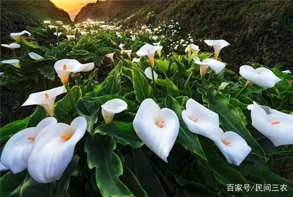
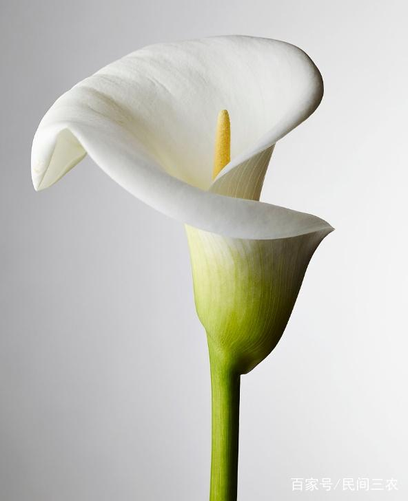

马蹄莲养起来并不难，看完这篇文章！简单养好马蹄莲！
18k阅读 - 34分钟之前发布
植物
花
马蹄莲
马蹄莲也有可能浇的水太少，马蹄莲是一种湿生的花卉，要是环境干旱少水，也将引起马蹄莲叶片变黄。
马蹄莲又被称为慈姑花、海芋等等，是多年生的草本植物，原产地为非洲东北部还有南部，
从我们国家的北京、江苏、福建、台湾、四川、云南以及秦岭地区注意栽种观赏，
马蹄莲可以药用能够清热解毒，下面我们就一起来看看盆栽的马蹄莲怎么养殖吧！
马蹄莲的原产地从非洲的南边，比较爱暖和、潮湿以及日照足够的条件，马蹄莲并不抗寒以及干旱。
马蹄莲最适合成长的气温是15～25℃中间，晚上的时候气温不要小于13℃，要是环境的气温大于25℃
或者小于5℃，马蹄莲就会被迫的休眠。

马蹄莲比较爱水，从成长阶段田地需要维持好潮湿，夏天气温高的时候块茎就到休眠状态以后，我们
就需要维持好浇水了。田地需要肥效好、保水能力强的黏质壤土，马蹄莲的pH值从6.0～6.5中间。
马蹄莲进行分株的话，需要从当5～6月花后，马蹄莲的老叶慢慢的变枯，而且会长出新叶的时候，或
者是从9月中旬换盆的时候，我们把母株四周的小块茎给弄下来，之后再分级的上盆。正常栽种完上以
后的3个月就能开花。马蹄莲的播种主要是从屋子里面盆播最好，马蹄莲发芽最适合气温是18～24℃中间，
马蹄莲播完以后的15～20天能发芽，马蹄莲的实生苗需要培养上3～4年的时间才可以开花。
马蹄莲的成长最恰当气温是22-30度中间，要是气温小于20度往下的时候，马蹄莲的成长速度就将变慢。
严重的时候就会停止成长。马蹄莲爱暖和、潮湿的条件，所以马蹄莲过冬的时候，大伙就还要小心对马蹄
莲的保温了。马蹄莲浇水的时候，我们就要根据盆土的干燥状况给浇水。我们给马蹄莲浇水之前，需要先
看好盆子土的情况。平常我们能够从盆土的表面还有花表面给喷上水，维持盆子里面土的潮湿。马蹄莲从
成长阶段需要水要充足，我们就要常常朝叶子面、地面上给洒水，我们注意叶面的清洁。

马蹄莲从开始成长的阶段十分抗阴蔽，从马蹄莲成长快的时候，就一定要有十分足够的日照，马蹄莲开花
阶段就更要有足够的日照了，这样才可以确保马蹄莲花繁叶茂。要是马蹄莲开花阶段的日照不充足，那么
就很容易导致，马蹄莲的花苞变绿或者是不开花。马蹄莲的成长阶段每等上20天给弄上肥一回，我们需要
挑腐熟的豆饼水，马蹄莲成长快的时候需要多弄薄肥，每10天的时间给弄上一次。马蹄莲施肥的时候不能
从叶鞘里面给倒上肥水，从而防止马蹄莲变烂死亡的现象。
相关推荐
马蹄莲的花语是什么？
16k阅读 | 800评论
马蹄莲的花语是什么？
16k阅读 | 800评论
马蹄莲的花语是什么？
16k阅读 | 800评论
马蹄莲的花语是什么？
16k阅读 | 800评论
马蹄莲的花语是什么？
16k阅读 | 800评论
马蹄莲的花语是什么？
16k阅读 | 800评论